Subject
History
 Was public health a tool for control?
Was public health a tool for control? What happens to the soil when the forest disappears?
What happens to the soil when the forest disappears? Is your schedule fighting your biology?
Is your schedule fighting your biology?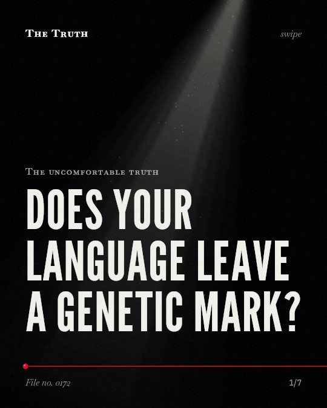
Does your language leave a genetic mark?You assume historical peace, but the evidence is limited.Did technology choose your life?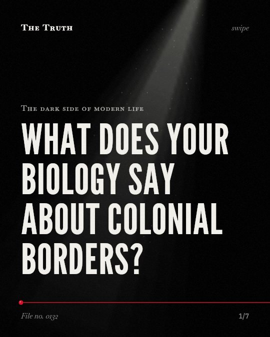
What does your biology say about colonial borders?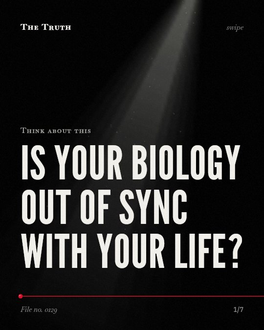
Is your biology out of sync with your life? Did war create the modern nation-state?
Did war create the modern nation-state? Who funded your heart health advice?
Who funded your heart health advice?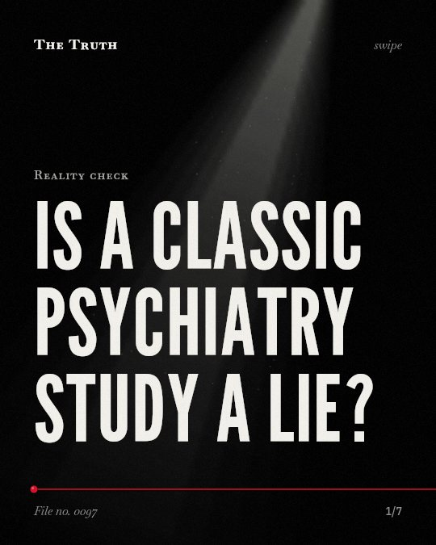
Is a classic psychiatry study a lie? Who is funding the science you read?
Who is funding the science you read?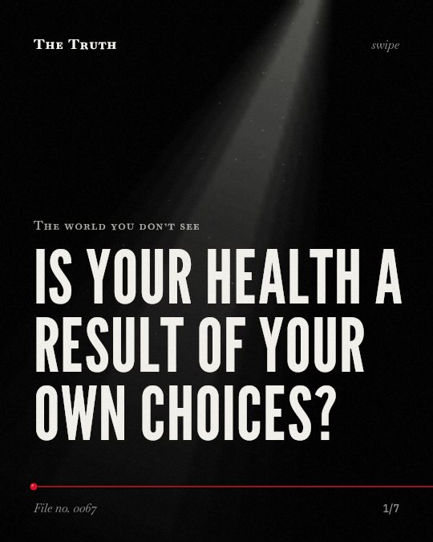
Is your health a result of your own choices?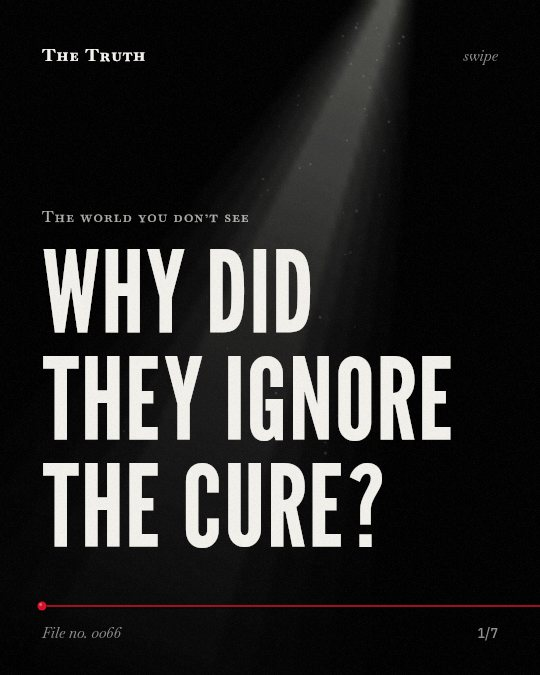
Why did they ignore the cure?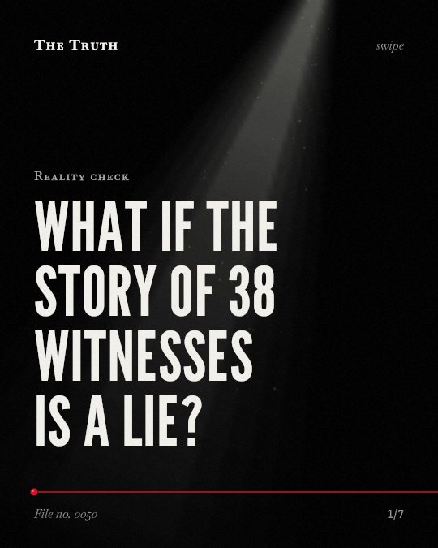
What if the story of 38 witnesses is a lie?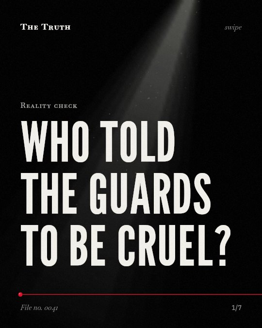
Who told the guards to be cruel?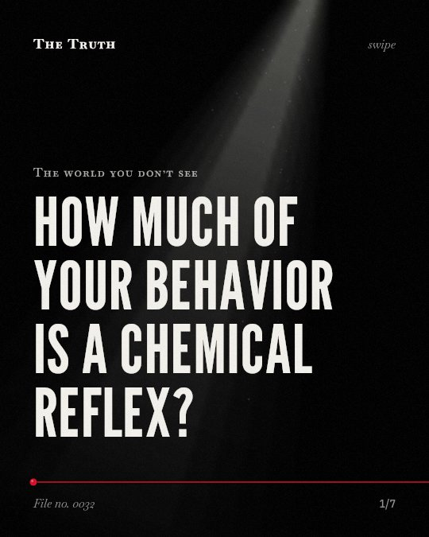
How much of your behavior is a chemical reflex?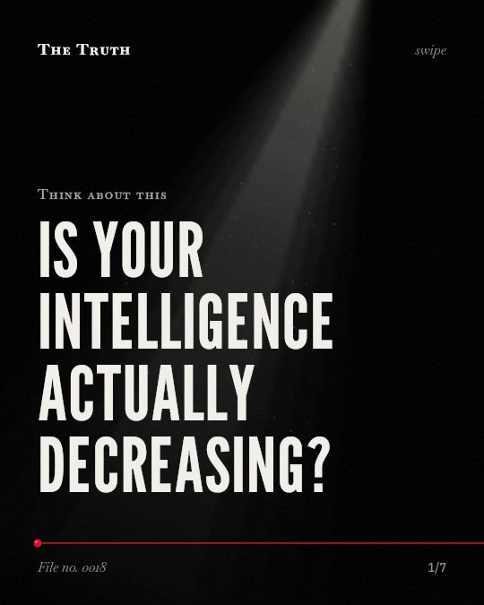
Is your intelligence actually decreasing?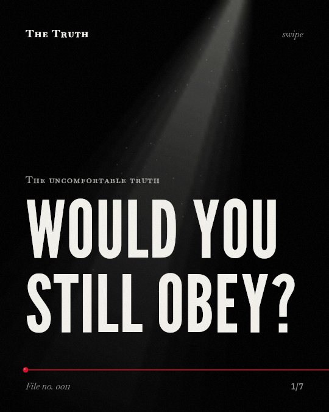
Would you still obey?